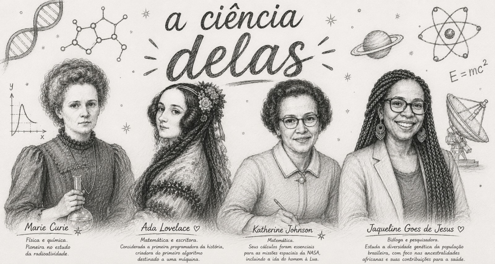
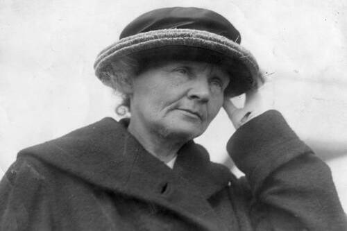

XX de Outubro de 2026 — horário a definir
Formulário de Avaliação →Introdução
A participação das mulheres na ciência foi essencial para o avanço da humanidade. Mesmo enfrentando preconceitos, desigualdade e falta de oportunidades durante muitos anos, diversas mulheres contribuíram com descobertas que transformaram o mundo. Atualmente, as mulheres estão presentes em áreas como medicina, astronomia, química, física, matemática, engenharia, tecnologia e robótica. O projeto "A Ciência Delas" tem como objetivo mostrar a importância dessas cientistas, inspirando novas gerações a acreditarem no conhecimento, na pesquisa e na inovação.
A História das Mulheres na Ciência
Durante grande parte da história, as mulheres não podiam frequentar universidades ou participar oficialmente de pesquisas científicas. Muitas vezes, seus trabalhos eram ignorados ou recebiam crédito em nome de homens. Mesmo diante dessas dificuldades, várias mulheres conseguiram deixar sua marca na ciência. Elas provaram que inteligência, criatividade e dedicação não dependem de gênero. Hoje, as mulheres conquistam cada vez mais espaço em universidades, laboratórios, empresas de tecnologia e centros de pesquisa ao redor do mundo.

Física e Química
Marie Curie foi uma física e química muito importante para a história da ciência. Ela descobriu os elementos rádio e polônio e realizou pesquisas sobre a radioatividade. Foi a primeira mulher a ganhar um Prêmio Nobel e também a primeira pessoa a receber dois Nobel em áreas diferentes, Física e Química.
Matemática e Escritora
Ada Lovelace é considerada a primeira programadora da história. Ela criou ideias que serviram de base para os computadores atuais, muito antes da tecnologia moderna existir. Seu trabalho inspirou o desenvolvimento da programação e da computação, áreas fundamentais no mundo.

Matemática e Física
Katherine Johnson foi uma matemática da NASA responsável pelos cálculos das missões espaciais americanas. Seu trabalho ajudou astronautas a chegarem ao espaço com segurança. Ela se tornou um símbolo da importância das mulheres e das mulheres negras na ciência.

Biomédica
Jaqueline Goes de Jesus é uma cientista brasileira reconhecida mundialmente por participar do sequenciamento do coronavírus no Brasil durante a pandemia da COVID-19. Seu trabalho foi muito importante para os estudos sobre o vírus e para o avanço das pesquisas científicas no país.
Confira os horários das atividades da Feira de Ciências e Tecnologia 2026
A Definir
A Definir
A Definir
Conheça os projetos da Feira de Ciências e Tecnologia 2026 desenvolvidos pelas turmas da FAETEC Macaé.
Veja os melhores momentos da Feira de Ciências e Tecnologia.
Fale conosco pelo WhatsApp.